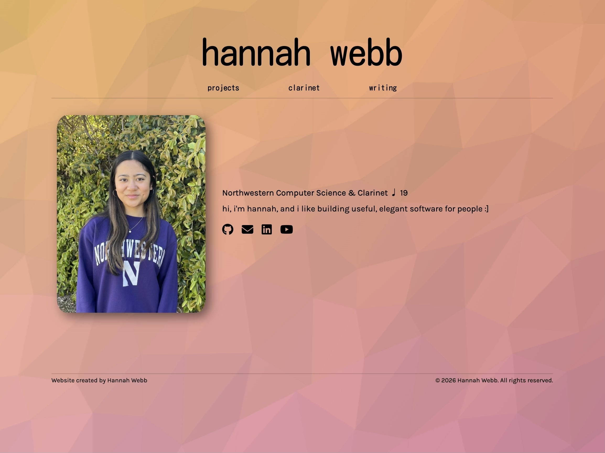
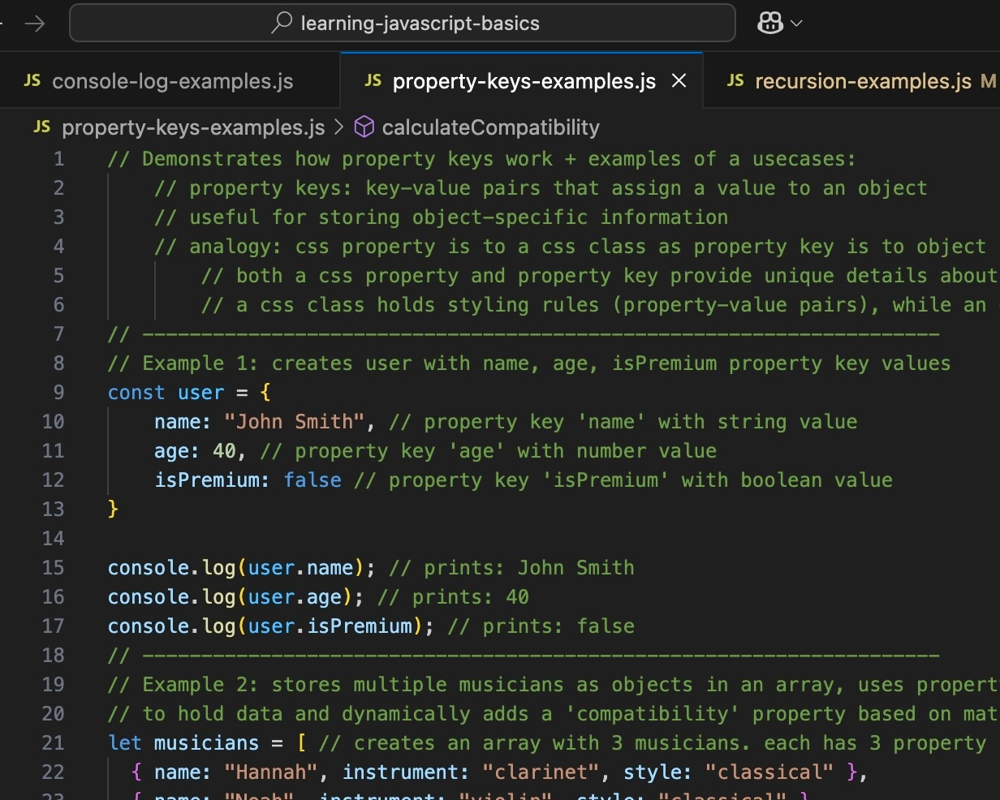
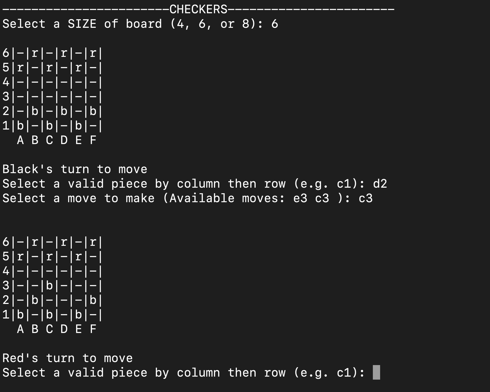

sharing things as i build them here—projects are also on GitHub.
Personal Website

- Built to showcase my interests and future projects.
- Features responsive layout, embedded YouTube content, custom Google Fonts, Font Awesome icons, page-load animations, fixed bottom gradient overlay, project cards with hover transforms, and flexbox styling.
- I learned how to structure content with semantic HTML elements for clarity and accessibility, implement css flexbox, grid, interactive hover effects & fade in animations, connect to external APIs, initialize & manage git repo, and deploy webpages to a live server/domain.
- Deployed June 24, 2025
JavaScript Fundamentals Repository

- Created as a beginner's reference, this collection of .js files explains basic javascript concepts through well-commented examples and early-stage logic projects.
- Covers functional programming fundamentals (function writing, object properties, recursive algorithms, scoping, and an early-stage musician-gig matching script using recursive selection sort) and object-oriented programming concepts (object methods, this, class definition and instantiation, constructors, class inheritance, and a simple 2-player battle simulation game using randomization logic).
- Created July 29, 2025
Checkers in Python (Terminal Game)

- Created as a class project for CS 150, this terminal-based Checkers game implements the full game logic in Python with a focus on object-oriented design and state management.
- Uses core OOP concepts including class definition, encapsulation, method interaction, and inheritance-style behavior (e.g. piece types and kinging), alongside string-based board representation, move validation, turn control, and win-condition checking.
- Built entirely from scratch without external libraries to strengthen understanding of game logic, control flow, and object-oriented programming in Python.
- Created December 10, 2025.